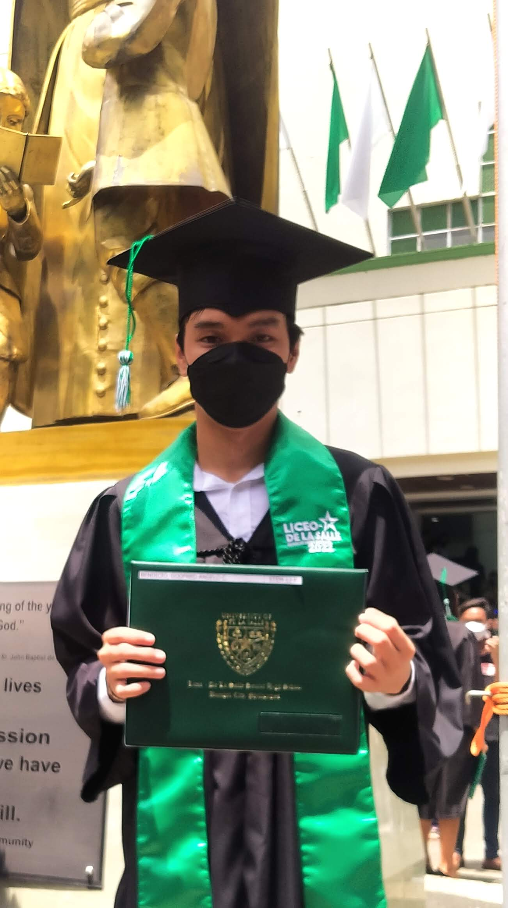
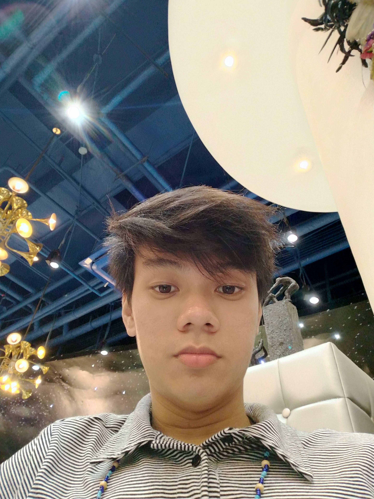
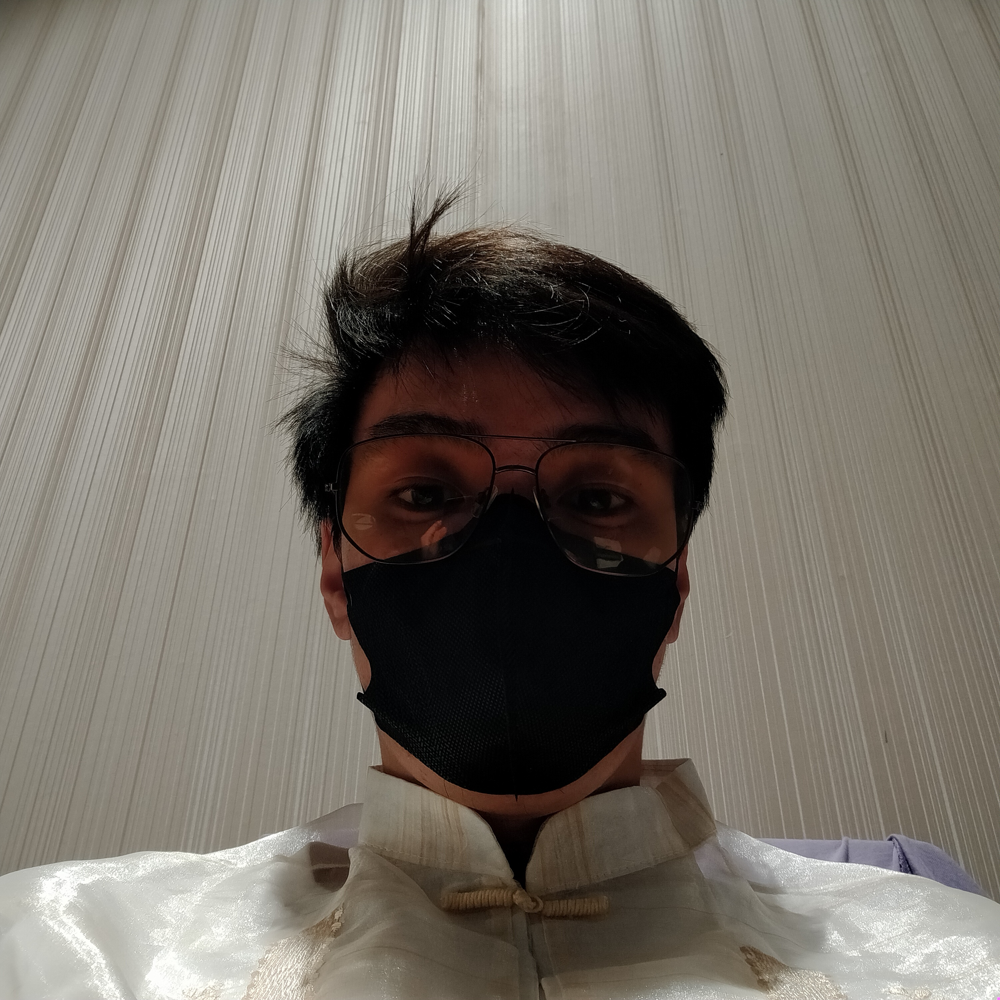

MISSION
We are a group of tech enthusiasts who have come together to create a community for individuals who share our passion for technology. Our mission is to provide a platform for people to learn, collaborate, and share their knowledge and expertise in various areas of technology.
Our club is open to anyone who has an interest in technology, whether you are a beginner or an expert. We offer a range of activities and events that cater to the diverse interests of our members. Some of the activities we organize include workshops, seminars, hackathons, and networking events.
At our club, we believe that learning should be fun and engaging. That is why we strive to make our events and activities as interactive as possible. Our workshops and seminars are designed to be hands-on, so that our members can learn by doing. We also encourage our members to participate in hackathons and coding challenges, where they can apply their skills to real-world problems and compete with other members.
TEAM
-

Godfred Bendicio
Godfred is the President of ITS club on 2023. He is 20 years old and is currently studying in La Salle Bacolod. Godfred is a front-end developer and designer. He writes a bunch of HTML, CSS, and JavaScript and Founder of IT.is responsible for overseeing the technology strategy and implementation of the company. He work closely with other executives to ensure that technology aligns with business objectives and helps the company stay competitive.
@GodfredBendicio -

Angelo Bendicio
Together with Godfred, He is a also one of the founder of ITS club and the Vice-President of the club. Angelo is a full stack developer. Alex does JavaScript development for Accenture, both front end and back, and just about everything else.
@Angelo -

Gold Fried Bendicio
Gold Fried is our documentation lead, customer support maestra, editor, and cyber security. He protect the club's systems and data from cyber threats. He implement security measures, monitor for potential threats, and respond to security incidents.
@GoldFried
‹ ›